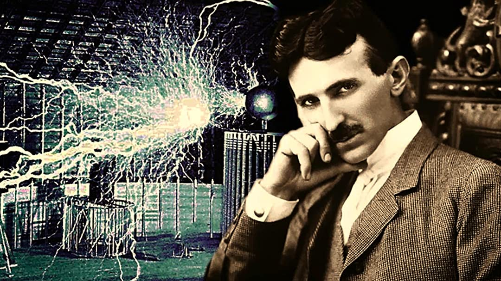

Nikola Tesla
(10 July 1856 - 7 January 1943)
"The present is theirs; the future, for which I really worked, is mine."
Nikola Tesla

Nikola Tesla was a scientist whose inventions include the Tesla coil, alternating-current (AC) electricity, and the discovery of the rotating magnetic field.
Who Was Nikola Tesla?
- Nikola Tesla was an engineer and scientist known for designing the alternating-current (AC) electric system, which is the predominant electrical system used across the world today. He also created the "Tesla coil," which is still used in radio technology. Born in modern-day Croatia, Tesla came to the United States in 1884 and briefly worked with Thomas Edison before the two parted ways. He sold several patent rights, including those to his AC machinery, to George Westinghouse.
-
Early Life
Tesla was born in Smiljan, Croatia, on July 10, 1856. Tesla was one of five children, including siblings Dane, Angelina, Milka and Marica. Tesla's interest in electrical invention was spurred by his mother, Djuka Mandic, who invented small household appliances in her spare time while her son was growing up. Tesla's father, Milutin Tesla, was a Serbian orthodox priest and a writer, and he pushed for his son to join the priesthood. But Nikola's interests lay squarely in the sciences. -
Education
After studying at the Realschule, Karlstadt (later renamed the Johann-Rudolph-Glauber Realschule Karlstadt) in Germany; the Polytechnic Institute in Graz, Austria; and the University of Prague during the 1870s, Tesla moved to Budapest, where for a time he worked at the Central Telephone Exchange. It was while in Budapest that the idea for the induction motor first came to Tesla, but after several years of trying to gain interest in his invention, at age 28 Tesla decided to leave Europe for America. -
Nikola Tesla vs. Thomas Edison
In 1884 Tesla arrived in the United States with little more than the clothes on his back and a letter of introduction to famed inventor and business mogul Thomas Edison, whose DC-based electrical works were fast becoming the standard in the country. Edison hired Tesla, and the two men were soon working tirelessly alongside each other, making improvements to Edison's inventions. Several months later, the two parted ways due to a conflicting business-scientific relationship, attributed by historians to their incredibly different personalities: While Edison was a power figure who focused on marketing and financial success, Tesla was commercially out-of-touch and somewhat vulnerable.
For more information, visit this page.